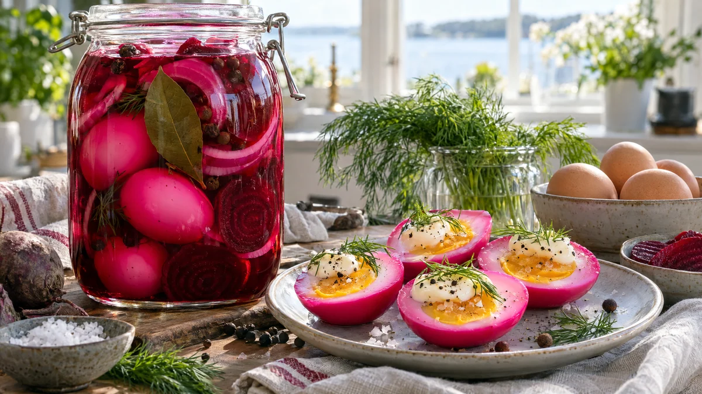

RESTFEST · RECEPTSylt, saft & inlagt · Mingelmat & tilltugg
Rosa inlagda ägg i rödbetslag
Lagen som blev kvar i rödbetsburken och ett halvdussin ägg. Äggen får ligga i den söta, syrliga lagen i kylen tills vitan blivit klart cerise, och när de delas syns en rosa ring runt den gyllene gulan. Lika vackra på påskbordet som på julbordet, och ett perfekt sätt att ta vara på lagen.
- Förberedelse
- 10 min + 1–3 dygn i kylen
- Tillagning
- 10 min
- Portioner
- 6 ägg
- Nivå
- Nybörjare
Bra att veta. Diska burkar, flaskor och lock noga och skålla dem med kokande vatten precis före användning, eller värm glaset i ugnen på 125 grader i 10 minuter. Fyll dem medan innehållet är varmt och skruva på locket direkt. Förvara öppnade burkar i kylen och använd alltid en ren sked.
 Det här behöver du
Det här behöver du
Tryck på + vid det du behöver köpa.
Ägg
Om lagen inte räcker
Till servering
Gör så här
- Lägg äggen i kokande vatten och koka i 9 minuter. Kyl dem direkt i kallt vatten och skala dem.
- Lägg äggen i en ren glasburk, ca 1 liter, tillsammans med några rödbetsskivor, rödlöksringarna, lagerbladet och kryddpepparn.
- Häll över rödbetslagen så att äggen täcks helt. Räcker den inte, rör ihop vatten, ättika och socker och fyll på.
- Skruva på locket och ställ burken i kylen. Efter 1 dygn har vitan en rosa kant, efter 3 dygn är den rosa ända in till gulan.
Dekoration och servering
- Dela äggen på längden precis före servering, så att den rosa ringen syns skarp mot gulan.
- Lägg dem på ett fat med en liten klick majonnäs, dillkvistar, flingsalt och nymald svartpeppar.
- Fyll dem med gubbröra som ägghalvorna i recept 55, så får du ett rosa mingelfat.
- Skiva dem på smørrebrød (recept 20) eller hacka dem i en potatissallad.
- Förvara äggen i kylen hela tiden och ät dem inom en vecka.
Mått och ugnstemperaturer
Måtten är svenska (dl, msk, tsk, krm). Ugnstemperaturerna gäller vanlig ugn med över- och undervärme; med varmluft, sänk med 20 grader.